U Màng Phổi
I. Đại cương
– Định nghĩa:
+ U màng phổi (pleural tumors) là nhóm tân sinh liên quan đến màng phổi, gồm u nguyên phát từ các thành phần của màng phổi và tổn thương thứ phát do xâm lấn trực tiếp hoặc di căn.
+ Màng phổi gồm lá thành và lá tạng, được phủ bởi lớp tế bào trung biểu mô trên mô liên kết dưới trung mô chứa mạch máu và bạch huyết.
– Dịch tễ: Tổn thương thứ phát do di căn thường gặp hơn u màng phổi nguyên phát.
– Căn nguyên:
+ U nguyên phát gồm u trung biểu mô ác tính (malignant pleural mesothelioma), u xơ đơn độc màng phổi (solitary fibrous tumor of the pleura, SFTP), u mỡ màng phổi và một số u trung mô hiếm.
+ U xơ đơn độc màng phổi có phổ hành vi sinh học từ lành tính đến ác tính, không nên mặc định xếp vào nhóm u lành.
+ Tổn thương thứ phát thường do di căn từ ung thư phổi, ung thư vú hoặc các ung thư ngoài lồng ngực. Phơi nhiễm amiăng là yếu tố nguy cơ quan trọng của u trung biểu mô ác tính; thời gian tiềm tàng thường kéo dài.
– Cơ chế bệnh sinh: U nguyên phát phát sinh từ tế bào trung biểu mô hoặc mô liên kết dưới trung mô; tổn thương thứ phát lan đến màng phổi qua xâm lấn trực tiếp, đường bạch huyết hoặc đường máu.
– Biểu hiện lâm sàng:
+ Nhiều u khu trú không gây triệu chứng và được phát hiện tình cờ; khi có biểu hiện, thường gặp đau ngực, ho hoặc khó thở.
+ Tràn dịch màng phổi thường gặp trong bệnh ác tính lan tỏa nhưng không đặc hiệu và không xuất hiện ở mọi trường hợp.
– Phân bố:
+ U xơ đơn độc màng phổi và u mỡ thường khu trú; u trung biểu mô ác tính thường lan tỏa; di căn màng phổi có thể khu trú, nhiều ổ hoặc lan tỏa.
+ Kiểu phân bố chỉ gợi ý, không đủ để kết luận lành tính hay ác tính.
– Vai trò CĐHA:
+ Giúp xác định tổn thương có nguồn gốc màng phổi hay từ phổi/thành ngực, đánh giá kiểu phân bố, phạm vi lan rộng, xâm lấn và tràn dịch phối hợp.
+ Hỗ trợ đánh giá giai đoạn và lựa chọn vị trí sinh thiết khi cần; hình ảnh học không phải lúc nào cũng xác định được bản chất mô học.
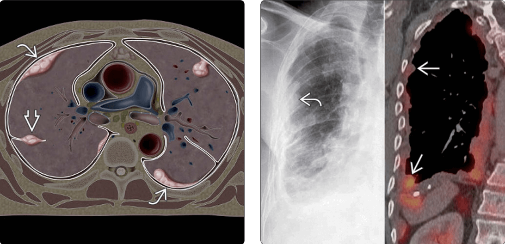
© Chẩn Đoán Hình Ảnh Xray.vn
II. Chẩn đoán x-quang
=> Xác định tổn thương ngoài phổi
– Phim thẳng, nghiêng và tiếp tuyến giúp đánh giá mối liên quan của khối với thành ngực và nhu mô phổi.
– Tổn thương nằm ngoài nhu mô phổi thường tạo góc tù với thành ngực; nếu ở khoang ngoài màng phổi, khối có thể đẩy màng phổi và nhu mô phổi vào trong. Dấu hiệu này gợi ý vị trí ngoài phổi nhưng không phân biệt được tổn thương xuất phát từ màng phổi hay thành ngực.
– Dấu hiệu đường bờ không hoàn toàn (incomplete border sign): bờ tiếp giáp nhu mô phổi thường rõ, trong khi phần bờ hướng về thành ngực mờ hoặc không thấy. Đây là dấu hiệu gợi ý, không đặc hiệu cho tổn thương ngoài nhu mô phổi.
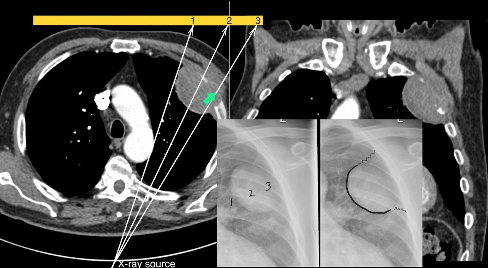
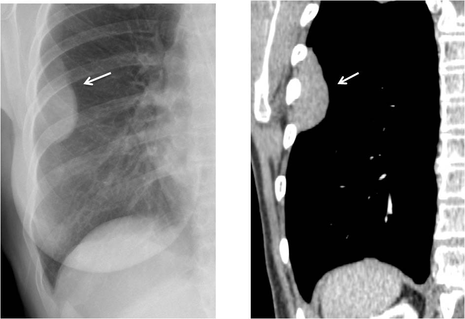
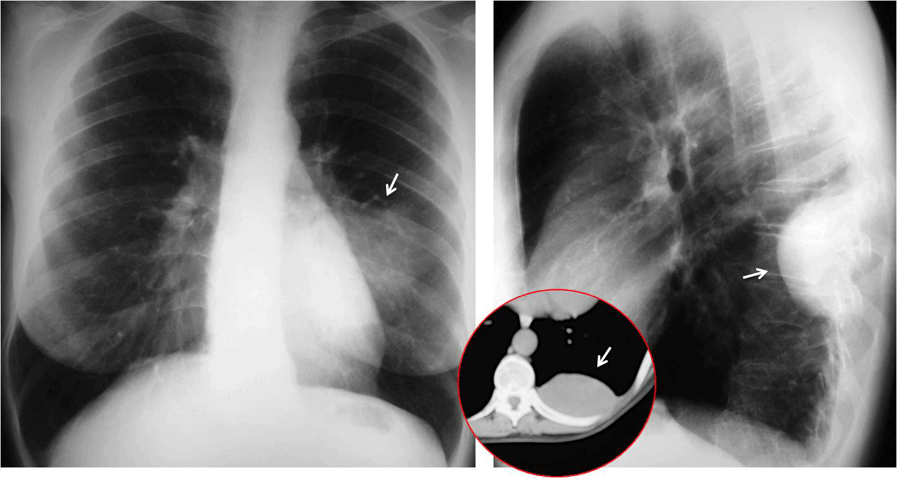
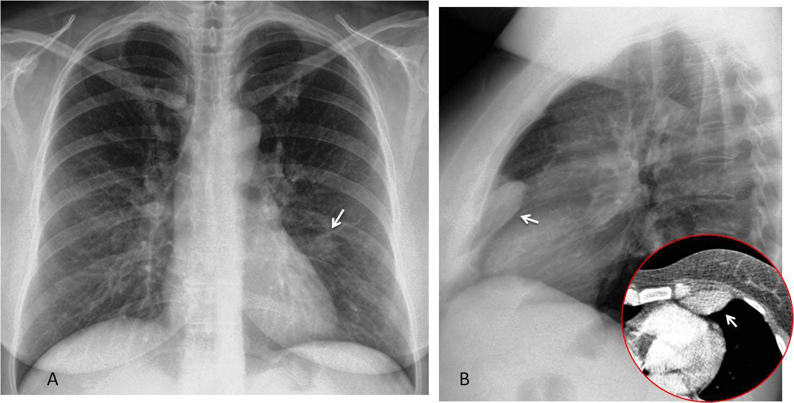
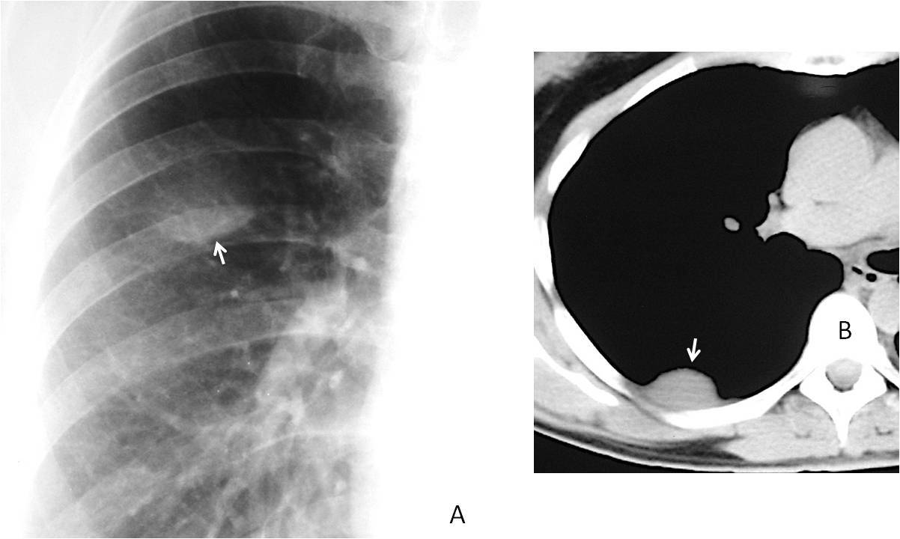
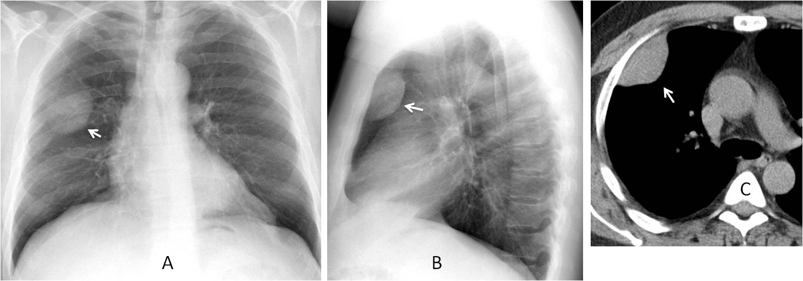
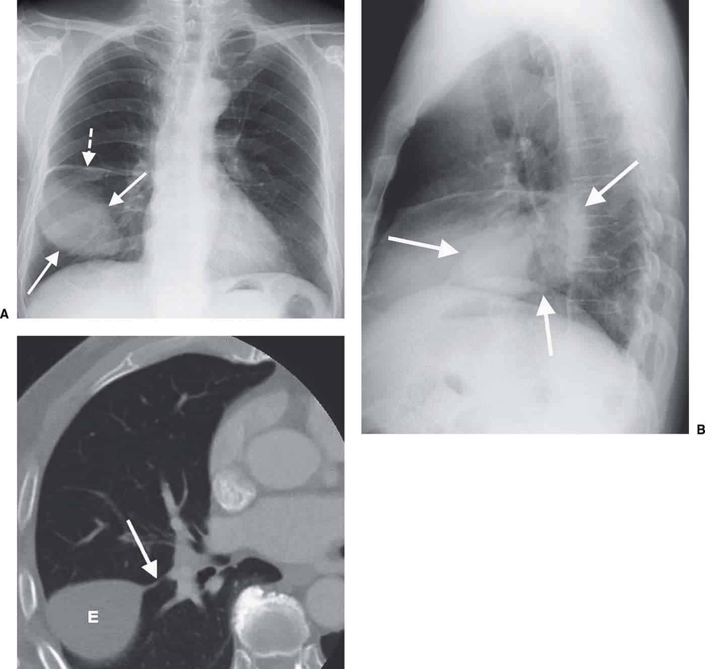
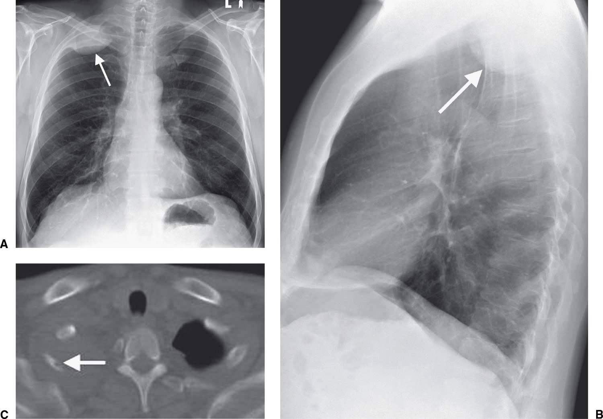
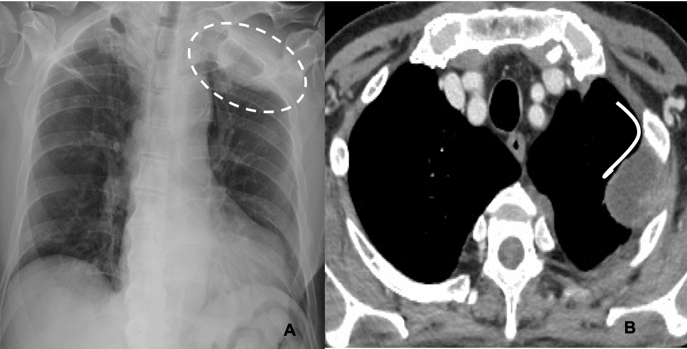
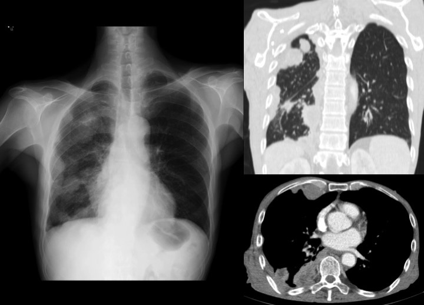
=> Đặc điểm vị trí tổn thương:
– Tổn thương màng phổi thường có hình bầu dục, bờ thuôn, tạo góc tù với thành ngực và có ranh giới rõ với nhu mô phổi. Khối rất lớn có thể tạo góc nhọn ở cực dưới; vì vậy, góc tiếp xúc không phải tiêu chuẩn tuyệt đối.
– Khối thành ngực thường khu trú, hình tròn hoặc bầu dục và cũng có thể tạo góc tù với thành ngực; do đó, góc tù không đủ để phân biệt khối thành ngực với khối màng phổi.
– Trên CT, mỡ ngoài màng phổi (extrapleural fat) bị đẩy ra ngoài về phía thành ngực gợi ý khối có nguồn gốc màng phổi; bị đẩy vào trong về phía nhu mô phổi gợi ý khối ngoài màng phổi, thường thuộc thành ngực.
– Tổn thương phổi ngoại vi thường tạo góc nhọn với thành ngực và có bờ không đều hoặc tua gai; tổn thương áp sát màng phổi dạng mảng rộng có thể tạo góc tù. Cần phối hợp các dấu hiệu, không kết luận từ góc tiếp xúc đơn độc.
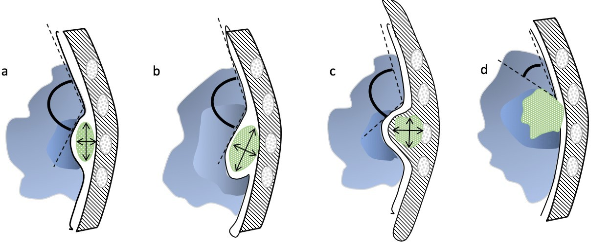
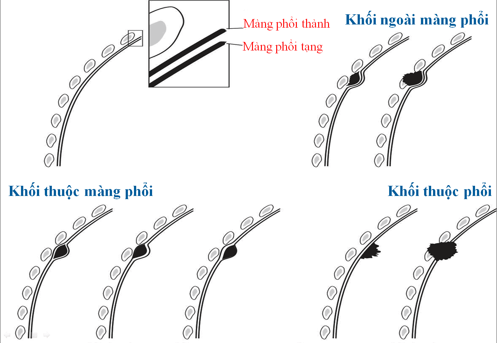
* U xơ đơn độc màng phổi
– U xơ đơn độc màng phổi (solitary fibrous tumor of the pleura, SFTP) là u trung mô phát sinh từ mô liên kết dưới trung mô, không xuất phát từ tế bào trung biểu mô.
– Dịch tễ: U hiếm, ước tính chiếm dưới 5% các khối u màng phổi; thường gặp ở tuổi 45–60, tỷ lệ nam/nữ khoảng 1:1 trong một số loạt bệnh. Phần lớn lành tính; tỷ lệ ác tính được báo cáo khoảng 20% nhưng thay đổi giữa các loạt bệnh.
– Căn nguyên: Không có mối liên quan điển hình với phơi nhiễm amiăng.
– Vị trí: Thường là khối đơn độc; khoảng 80% xuất phát từ lá tạng, phần còn lại chủ yếu từ lá thành. U có thể nằm trên bề mặt màng phổi hoặc trong rãnh liên thùy.
– Kích thước: Thay đổi, khoảng 2–30 cm; u lớn có thể có hoại tử, xuất huyết hoặc thoái hóa nhầy/nang.
– Biểu hiện lâm sàng: Tỷ lệ không triệu chứng thay đổi giữa các loạt bệnh, có báo cáo khoảng 25%; khi có triệu chứng thường gặp khó thở, đau ngực hoặc ho. Hiếm khi có hạ đường huyết cận u hoặc phì đại xương khớp.
– Phân biệt: Cần đưa SFTP vào chẩn đoán phân biệt khi gặp khối màng phổi một bên phát triển chậm; hình ảnh đơn thuần không xác định chắc chắn tính lành hay ác.
– Theo dõi: Tái phát sau cắt bỏ được báo cáo khoảng 15% trong một số loạt bệnh; tỷ lệ thay đổi theo đặc điểm mô bệnh học và mức độ cắt bỏ.
– Hình ảnh X-quang:
+ Thường thấy khối mờ liên quan màng phổi, hình tròn hoặc bầu dục, bờ rõ, tương đối đồng nhất, tạo góc tù với thành ngực; đôi khi có dạng phân thùy.
+ U lớn có thể không đồng nhất do hoại tử, xuất huyết hoặc thoái hóa nhầy.
+ U có cuống có thể thay đổi vị trí trên các phim chụp liên tiếp theo thì hô hấp.
+ Vôi hóa và tràn dịch màng phổi có thể gặp; tỷ lệ báo cáo thay đổi, khoảng 7–26% với vôi hóa và khoảng 17% với tràn dịch trong một số loạt bệnh.
+ Vôi hóa, tràn dịch, xẹp phổi, di lệch trung thất hoặc xâm lấn thành ngực/tiêu xương sườn có thể gợi ý hành vi ác tính nhưng không đặc hiệu. Ước tính khoảng 20% nói đến tỷ lệ u ác tính trong một số loạt bệnh, không phải tần suất của các dấu hiệu này..
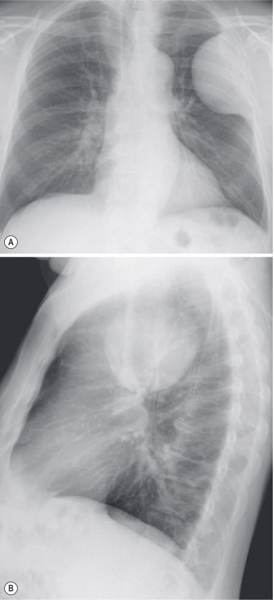
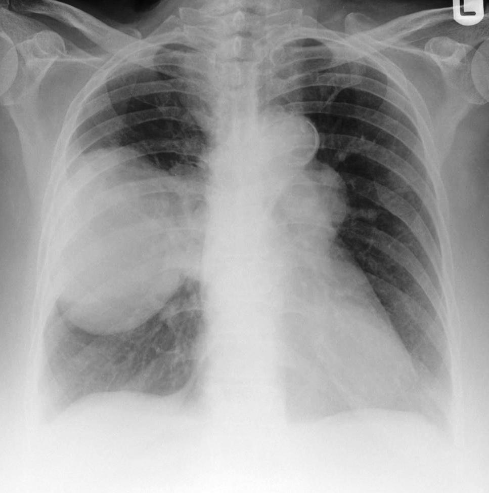
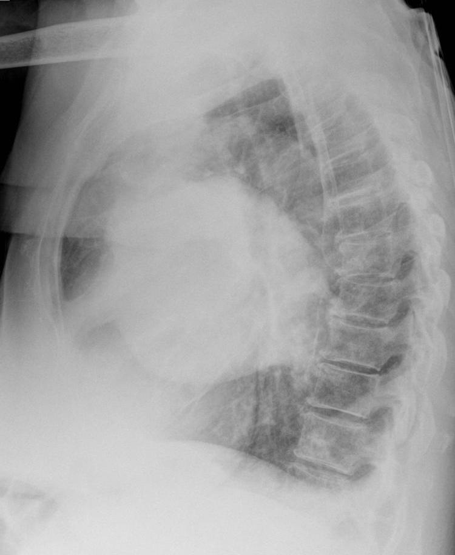
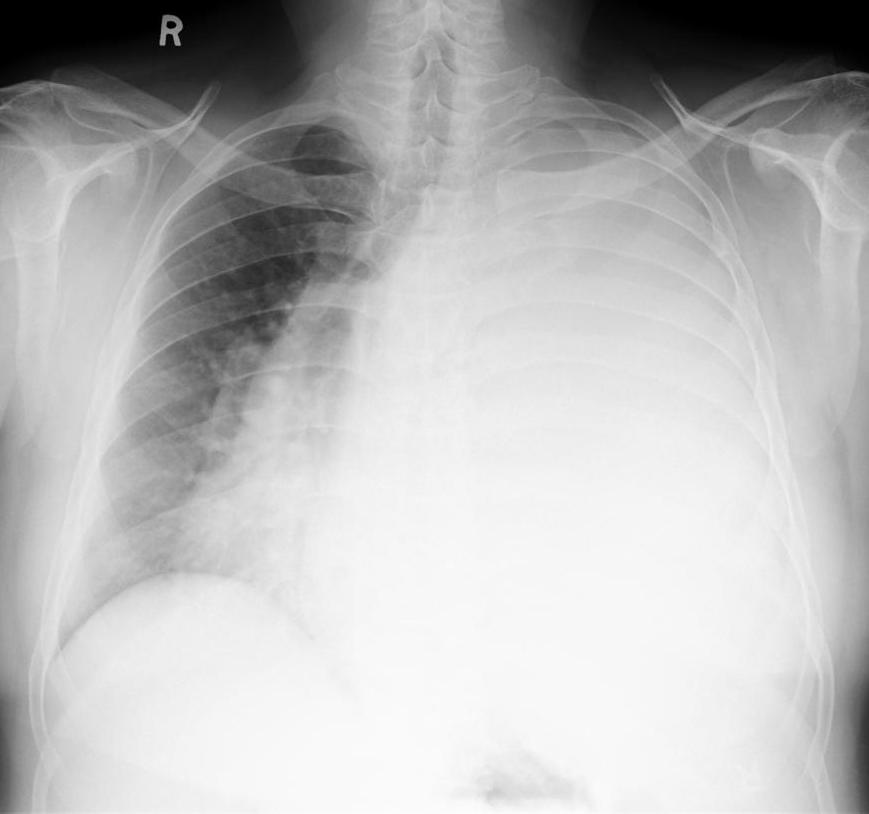
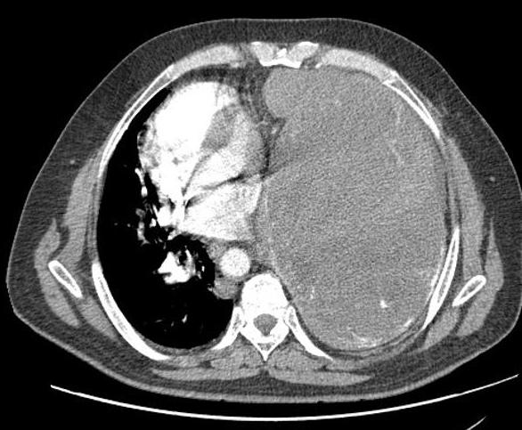
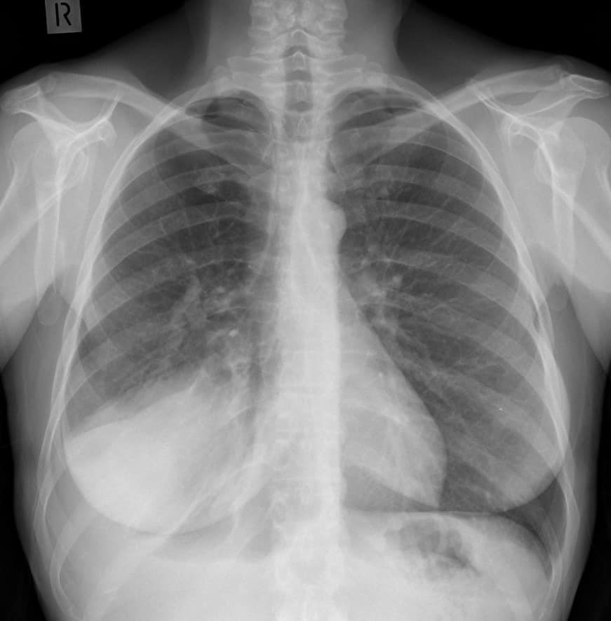
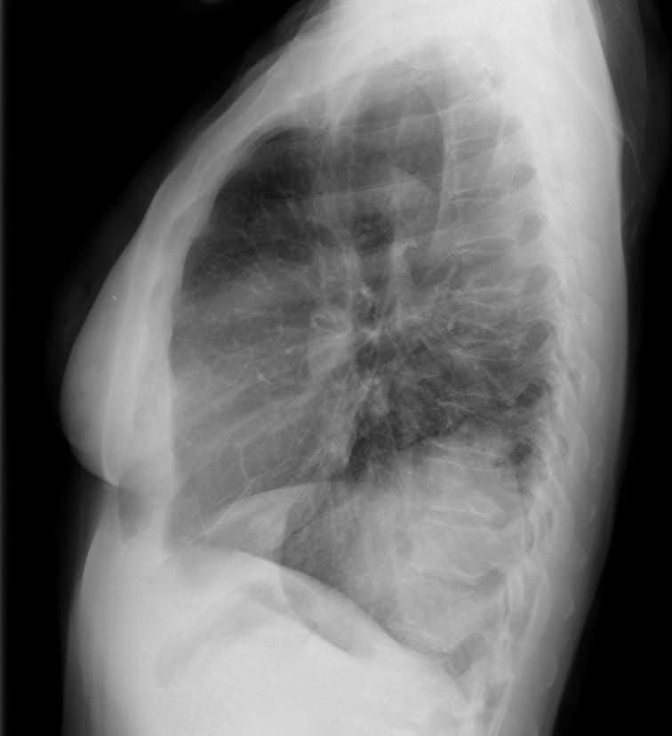
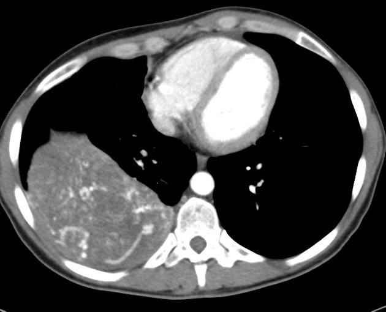
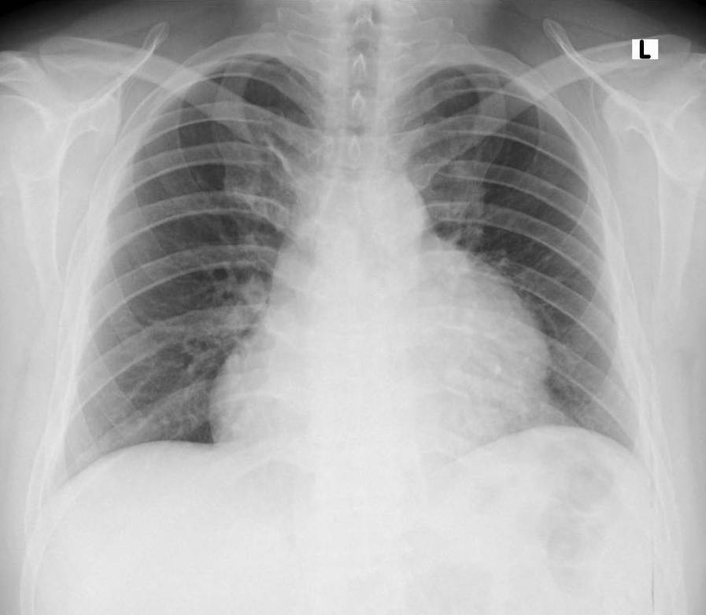
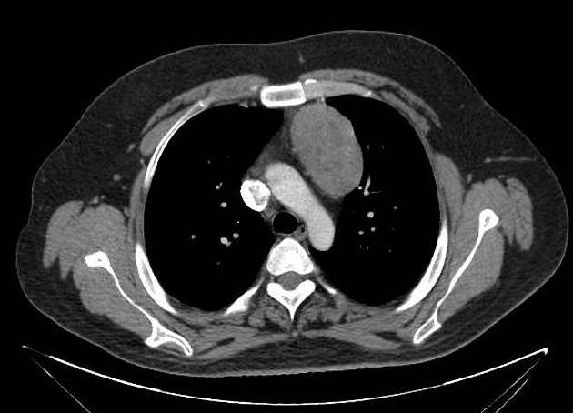
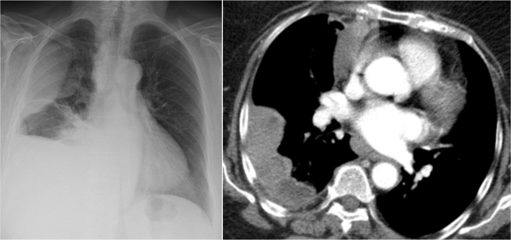
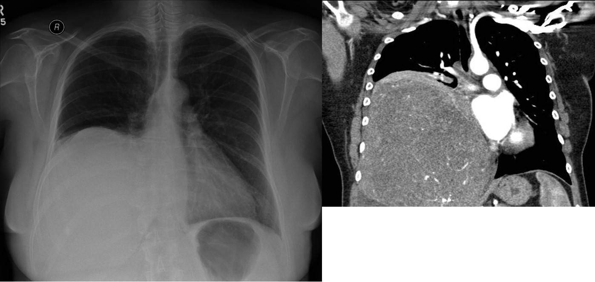
=> Case lâm sàng 1:
=> Case lâm sàng 2:
=> Case lâm sàng 3:
=> Case lâm sàng 4:
=> Case lâm sàng 5:
=> Case lâm sàng 6:
=> Case lâm sàng 7:
=> Case lâm sàng 8:
* U mỡ màng phổi
– U mỡ màng phổi (pleural lipoma) là u mỡ lành tính, thường phát triển chậm và được phát hiện tình cờ.
– Dịch tễ: Bệnh rất hiếm; các trường hợp được công bố chủ yếu ở người trưởng thành, thường trong khoảng 45–62 tuổi. Do số ca ít, chưa có ước tính tin cậy về phân bố giới; béo phì được ghi nhận ở một số trường hợp nhưng chưa đủ dữ liệu để xác lập là yếu tố nguy cơ.
– Biểu hiện lâm sàng: Phần lớn không triệu chứng; u lớn có thể gây triệu chứng chèn ép như ho khan, đau ngực, khó thở hoặc cảm giác nặng ngực.
– Vị trí: U màng phổi thật sự thường xuất phát từ lớp mỡ dưới trung mô của lá thành; khối mỡ ngoài màng phổi hoặc thành ngực có thể lồi vào lồng ngực và giả dạng u màng phổi.
– Kích thước: Thường nhỏ nhưng có thể phát triển lớn; u lớn có thể gây lõm hoặc tái cấu trúc xương sườn do tì đè. Tiêu xương cũng có thể gặp nhưng không điển hình.
– Đặc điểm hình ảnh:
+ U thường tròn hoặc bầu dục, bờ đều và rõ; một số có cuống.
+ U có cuống có thể thay đổi hình dạng hoặc vị trí theo thì hô hấp; có thể nhận biết qua sự thay đổi tương quan với xương sườn hoặc trung thất trên các phim chụp liên tiếp.
+ Thường là khối mờ đồng nhất, bờ đều và rõ; hình ảnh này không xác định được thành phần mỡ.
+ CT giúp xác nhận thành phần mỡ và đánh giá khoang xuất phát.
=> Case lâm sàng 1:
=> Case lâm sàng 2:


=> Case lâm sàng 3:
=> Case lâm sàng 4:
* U trung biểu mô ác tính
– U trung biểu mô ác tính (malignant pleural mesothelioma) là u ác tính nguyên phát của màng phổi:
– Dịch tễ: Thường được chẩn đoán ở tuổi 50–70; tỷ lệ nam:nữ khoảng 4:1 trong một số loạt bệnh, nhưng thay đổi theo quần thể. Phơi nhiễm amiăng là yếu tố nguy cơ chính, liên quan khoảng 80% trường hợp trong một số báo cáo; thời gian tiềm tàng thường kéo dài nhiều thập kỷ.
– Biểu hiện lâm sàng: Thường có triệu chứng không đặc hiệu như đau ngực hoặc đau kiểu màng phổi, đau vai, khó thở và ho khan; sụt cân thường xuất hiện khi bệnh tiến triển. Tràn dịch màng phổi một bên gặp ở khoảng 90% trường hợp, thường là dịch tiết và đôi khi lẫn máu; giai đoạn sớm có thể ít triệu chứng.
– Đặc điểm mô bệnh học: Gồm dạng biểu mô (epithelioid), dạng sarcomatoid và dạng hai thành phần (biphasic).
– Đặc điểm hình ảnh:
+ Dày màng phổi lan tỏa, dạng nốt, không đều hoặc phân múi; có thể lan vào màng phổi trung thất và khe liên thùy, bao quanh phổi. Giai đoạn tiến triển có thể xâm lấn trực tiếp phổi, trung thất, thành ngực, xương sườn và cơ hoành.
+ Dày màng phổi và tràn dịch một bên có thể cùng hiện diện; lượng dịch lớn có thể che lấp tổn thương màng phổi. Mảng màng phổi, đôi khi vôi hóa, có thể đi kèm và gợi ý phơi nhiễm amiăng nhưng không đặc hiệu cho u trung biểu mô.
+ Cạm bẫy: Tràn dịch lớn không nhất thiết đẩy trung thất sang bên đối diện; vỏ u hạn chế phổi nở và làm giảm thể tích phổi có thể làm mất dấu đẩy lệch dự kiến.
+ Phân biệt: Dày màng phổi dạng nốt, bao quanh phổi hoặc liên quan màng phổi trung thất gợi ý ác tính; xâm lấn thành ngực hay di căn càng củng cố. Ngưỡng dày trên 1 cm được đánh giá chủ yếu bằng CT; X-quang không đủ để phân biệt chắc chắn dày màng phổi lành tính với ác tính.


=> Case lâm sàng 1:
* Di căn màng phổi
– Di căn màng phổi (pleural metastases) là nhóm u ác tính thường gặp nhất ở màng phổi.
– Căn nguyên: Ung thư phổi và ung thư vú là các nguồn nguyên phát thường gặp; lymphoma, ung thư buồng trứng và đường tiêu hóa cũng có thể di căn màng phổi. Đường lan tràn gồm bạch huyết, đường máu hoặc xâm lấn trực tiếp.
– Dịch tễ: Tràn dịch màng phổi ác tính do di căn thường được xếp sau suy tim trái trong các nguyên nhân gây tràn dịch ở người lớn; thứ hạng thay đổi theo quần thể.
– Biểu hiện lâm sàng: Có thể không triệu chứng; khi có tràn dịch, thường biểu hiện khó thở, ho hoặc đau ngực.
– Hình ảnh X-quang:
+ Dày màng phổi dạng nốt, khu trú hoặc lan tỏa, có thể nhiều ổ và liên quan cả lá thành lẫn lá tạng; X-quang thường không xác định chắc chắn lá nào bị ảnh hưởng.
+ Tràn dịch màng phổi có thể một bên hoặc hai bên, đôi khi che lấp các nốt màng phổi.
+ Hủy xương sườn, hạch trung thất lớn hoặc nốt phổi có thể đi kèm bệnh ác tính lan rộng nhưng không đặc hiệu cho di căn màng phổi.
=> Case lâm sàng 1:
* U lympho ác tính
– U lympho màng phổi (pleural lymphoma) là tổn thương lymphoma ác tính ở màng phổi.
– Dịch tễ: Bệnh rất hiếm; một số tài liệu nêu lymphoma chiếm khoảng 2,5% các khối u thành ngực, nhưng tỷ lệ này không phản ánh riêng tần suất lymphoma màng phổi.
– Căn nguyên: Phần lớn tổn thương màng phổi là thứ phát từ lymphoma hệ thống; lymphoma nguyên phát ở màng phổi rất hiếm.
– Phân loại: Thường gặp lymphoma không Hodgkin; lymphoma Hodgkin cũng có thể liên quan màng phổi.
– Biểu hiện lâm sàng: Có thể gây khó thở, ho hoặc đau ngực, thường liên quan tràn dịch màng phổi; đôi khi kèm triệu chứng toàn thân của lymphoma như sốt, vã mồ hôi đêm hoặc sụt cân.
– Hình ảnh X-quang:
+ Tràn dịch màng phổi thường gặp, có thể một bên hoặc hai bên.
+ Dày màng phổi dạng nốt hoặc mảng, khu trú hoặc lan tỏa; đôi khi thấy các khối dưới màng phổi.
+ Hạch rốn phổi hoặc trung thất có thể đi kèm; các dấu hiệu này không đặc hiệu và cần được đối chiếu với bệnh lymphoma hệ thống.
=> Case lâm sàng 1:
III. Chẩn đoán CLVT
1. U trung biểu mô ác tính
– U trung biểu mô ác tính (malignant pleural mesothelioma, MPM) là u ác tính nguyên phát của màng phổi; u xơ đơn độc màng phổi (SFTP) là thực thể riêng, không phải thể lành tính của u trung biểu mô.
– Đặc điểm hình ảnh:
+ CT thường thấy dày màng phổi lan tỏa, dạng nốt và không đều; tổn thương có thể bao quanh phổi, lan vào màng phổi trung thất và khe liên thùy.
+ Dày màng phổi dạng nốt, dày trên 1 cm, bao quanh phổi hoặc liên quan màng phổi trung thất gợi ý ác tính. Sau tiêm thuốc cản quang, tổn thương thường ngấm thuốc; CT có tiêm giúp xác định phạm vi lan tràn và đánh giá xâm lấn.
+ Tràn dịch màng phổi một bên thường gặp; có thể khu trú hoặc làm khó đánh giá phần màng phổi bị dịch che phủ.
+ Giai đoạn tiến triển có thể xâm lấn cơ hoành, thành ngực, xương sườn hoặc trung thất; có thể kèm giảm thể tích phổi cùng bên và hạch rốn phổi/trung thất.
– Phân biệt: Xơ màng phổi lành tính thường dày nhẵn, ít tạo nốt; tuy nhiên, hình thái và mức độ ngấm thuốc có thể chồng lấp nên không thể xác định bản chất chỉ dựa vào một dấu hiệu CT.


=> Case lâm sàng 1:
=> Case lâm sàng 2:
=> Case lâm sàng 3:
2. Di căn màng phổi
– CLVT có thể thấy nốt hoặc khối bám màng phổi đơn độc hay nhiều ổ; dày màng phổi dạng nốt có thể khu trú hoặc lan tỏa, liên quan một hoặc cả hai lá và rãnh liên thùy.

=> Case lâm sàng 1:
– Có thể kèm tràn dịch màng phổi, nốt nhu mô phổi hoặc hạch rốn phổi/trung thất tùy ung thư nguyên phát và mức độ lan tràn.
– Phân biệt: Dày màng phổi lan tỏa do di căn có thể khó phân biệt với u trung biểu mô ác tính. Tiền sử ung thư hoặc các tổn thương di căn khác hỗ trợ chẩn đoán thứ phát, nhưng hình ảnh CLVT đơn thuần có thể không phân biệt chắc chắn.
=> Case lâm sàng 1:
3. U xơ màng phổi
– Đặc điểm hình ảnh:
+ SFTP thường là khối bám màng phổi, ranh giới rõ. U nhỏ có thể có dạng bán nguyệt, tạo góc tù với thành ngực, đậm độ và mức độ ngấm thuốc tương đối đồng nhất.
+ U lớn có thể phân thùy và không đồng nhất do hoại tử, xuất huyết hoặc thoái hóa nhầy/nang; vôi hóa cũng có thể gặp.
+ Nếu u có cuống, có thể thấy cuống bám vào màng phổi hoặc khe liên thùy; thay đổi vị trí trên các lần chụp theo thì hô hấp hỗ trợ nhận biết tính di động.
=> Case lâm sàng 1:
=> Case lâm sàng 2:
=> Case lâm sàng 3:
=> Khu vực trung tâm ngấm thuốc kém tương ứng với vùng hoại tử hoặc xơ.
=> Case lâm sàng 1:
=> Case lâm sàng 2:
=> Case lâm sàng 3:
=> Case lâm sàng 4:
4. U mỡ màng phổi
– Đặc điểm hình ảnh:
+ Khối có đậm độ mỡ đại thể, thường khoảng −120 đến −60 HU, bờ rõ và tạo góc tù với thành ngực.
+ Có thể có các vách mô mềm mảnh hoặc vỏ bao mỏng dưới 2 mm; thường không có nốt mô mềm hay thành phần đặc.
+ Vôi hóa hiếm gặp.
– Phân biệt: Vách dày, nốt mô mềm hoặc thành phần đặc trong khối chứa mỡ làm tăng nghi ngờ u mỡ ác tính (liposarcoma), nhưng không dấu hiệu đơn lẻ nào đủ để khẳng định ác tính.
=> Case lâm sàng 1:
5. Sarcoma màng hoạt dịch
– Sarcoma màng hoạt dịch (synovial sarcoma, SS) là sarcoma trung mô ác tính; tên gọi không có nghĩa khối u xuất phát từ màng hoạt dịch. Sarcoma màng phổi–phổi nguyên phát là thể rất hiếm.
– Dịch tễ: Thường gặp ở tuổi 30–50; y văn ghi nhận khoảng tuổi rộng hơn, từ 9 đến 77 tuổi. Chưa xác lập được ưu thế giới nhất quán hoặc yếu tố nguy cơ đặc hiệu.
– Vị trí: Có thể xuất phát từ màng phổi hoặc nhu mô phổi; trong các trường hợp ở lồng ngực, đôi khi khó xác định chính xác vị trí khởi phát. Cần loại trừ sarcoma màng hoạt dịch di căn từ vị trí ngoài lồng ngực.
– Kích thước: Thường đã lớn khi được phát hiện; các loạt ca nhỏ ghi nhận kích thước khoảng 5–20 cm, nhưng đây không phải khoảng tham chiếu cho mọi trường hợp.
– Cơ chế bệnh sinh: Đa số có chuyển đoạn t(X;18)(p11;q11) tạo gen dung hợp SS18–SSX. Mô bệnh học thường là dạng một pha hình thoi; cũng có thể là dạng hai pha hoặc kém biệt hóa.
– Biểu hiện lâm sàng: Thường không đặc hiệu, gồm khó thở, ho, đau ngực hoặc ho ra máu; có thể kèm tràn dịch màng phổi, đôi khi là tràn máu màng phổi.
– Đặc điểm hình ảnh:
+ CLVT thường thấy khối mô mềm bờ rõ, xuất phát từ màng phổi hoặc nhu mô phổi; khối có thể lớn và khó xác định chính xác vị trí khởi phát.
+ Khối thường không đồng nhất, gồm thành phần đặc và các vùng nang, hoại tử hoặc xuất huyết; sau tiêm thuốc cản quang, thành phần đặc ngấm thuốc không đồng nhất, đôi khi có viền ngoại vi mỏng ngấm thuốc.
+ Tràn dịch màng phổi cùng bên thường gặp. Vôi hóa thường không thấy nhưng vẫn có thể xuất hiện; khối lớn có thể gây xẹp phổi hoặc di lệch trung thất.
– Phân biệt: Quan trọng nhất là sarcoma màng hoạt dịch di căn từ vị trí ngoài lồng ngực; cần tìm ổ nguyên phát và đối chiếu mô bệnh học, hóa mô miễn dịch hoặc xét nghiệm gen dung hợp. Các u phổi nguyên phát, carcinoid, u xơ đơn độc màng phổi và u trung biểu mô ác tính cũng có thể có hình ảnh chồng lấp.
– Biến chứng: Có thể xâm lấn tại chỗ, gây xẹp phổi hoặc tràn máu màng phổi; di căn thường theo đường máu, có thể đến phổi, xương, tim hoặc não.
– Theo dõi: Có nguy cơ tái phát tại chỗ và di căn xa sau điều trị. Một loạt nhỏ 12 bệnh nhân ghi nhận tái phát tại chỗ ở 75% trong 2 năm đầu; cần thận trọng khi khái quát tỷ lệ này. Theo dõi hình ảnh kéo dài sau cắt bỏ, với lịch chụp cá thể hóa theo nhóm điều trị sarcoma.
IV. Chẩn đoán siêu âm
– Dày màng phổi:
+ Có thể khu trú hoặc lan tỏa; bề mặt dày không đều, dạng nốt hoặc mảng.
+ Dày dạng nốt, bờ không đều hoặc có xâm lấn thành ngực làm tăng nghi ngờ tổn thương ác tính nhưng không đặc hiệu.
– Khối màng phổi: Thường thấy khối mô đặc giảm âm hoặc không đồng nhất, tiếp giáp màng phổi; hình thái và độ hồi âm thay đổi, không đủ để xác định mô học.
– Tràn dịch màng phổi: Thường đi kèm nhưng không bắt buộc; dịch có thể đơn giản hoặc có hồi âm, vách hóa và khu trú. Dịch tạo cửa sổ âm học giúp đánh giá bề mặt màng phổi và các nốt màng phổi lân cận.
– Vai trò và giới hạn: Siêu âm phát hiện dịch lượng ít, đánh giá tổn thương sát thành ngực và hướng dẫn chọc hút hoặc sinh thiết khi cần. Xương sườn và khí trong phổi hạn chế vùng khảo sát; siêu âm không xác định chắc chắn bản chất lành–ác hoặc mức độ lan tràn toàn bộ.
=> Case lâm sàng 1:
=> Case lâm sàng 2:
=> Case lâm sàng 3:
=> Case lâm sàng 4:
=> Case lâm sàng 5: di căn màng phổi + dịch màng phổi
V. Chẩn đoán phân biệt
1. Tổn thương khu trú
* Tràn dịch màng phổi khu trú
– Cơ chế hình thành: Dính giữa hai lá màng phổi làm dịch bị khu trú trong một hoặc nhiều ngăn.
– Vị trí và tư thế: Dịch có thể khu trú ở vùng dưới phổi, thành ngực, trung thất hoặc rãnh liên thùy; thường ít hoặc không di chuyển khi thay đổi tư thế.
– Hình ảnh X-quang:
+ Có thể tạo bóng mờ ngoại vi, giống tổn thương màng phổi hoặc thành ngực; bờ thấy rõ hay không tùy vị trí và hướng chiếu.
+ Dịch trong rãnh liên thùy thường có hình thấu kính, hai đầu thuôn nhọn, tạo hình ảnh “u giả”. Dịch khu trú sát thành ngực có thể chỉ thấy một phần đường bờ.
+ Dày màng phổi lân cận hoặc các dấu hiệu tràn dịch khác có thể giúp nhận diện, nhưng không đặc hiệu.
– Phân biệt: Không nên dựa riêng vào góc tiếp xúc với thành ngực để kết luận. Siêu âm hoặc CLVT giúp xác nhận bản chất dịch và phân biệt với khối mô đặc.


=> Case lâm sàng 1:

* Khối u thành ngực / xương sườn.
– U xuất phát từ xương sườn hoặc mô mềm thành ngực có thể tạo bóng mờ ngoại vi áp sát màng phổi; thành phần mô mềm phát triển vào lồng ngực dễ giả khối màng phổi.
– Trên X-quang, tìm tổn thương xương đi kèm tại vị trí khối như tiêu xương, phá hủy vỏ xương, giãn rộng xương, xơ cứng hoặc phản ứng màng xương. Khối mô mềm thành ngực không nhất thiết gây biến đổi xương.
– Bóng mờ ngoài nhu mô phổi có thể có đáy rộng, bờ thuôn và tạo góc tù với thành ngực; các dấu này chỉ gợi ý vị trí ngoài phổi, không đủ để phân biệt chắc chắn khối thành ngực với khối màng phổi.
– CLVT giúp xác định tâm tổn thương, liên quan với xương sườn và mô mềm, đồng thời đánh giá phá hủy xương và xâm lấn màng phổi hoặc phổi. Phá hủy xương cũng có thể do u màng phổi xâm lấn thứ phát, nên không tự nó chứng minh khối u xuất phát từ thành ngực.


* Tụ máu thành ngực (ngoài màng phổi thành):
– Thường liên quan chấn thương và gãy xương sườn; ổ máu tụ nằm ngoài lá thành màng phổi.
– Trên X-quang, có thể tạo bóng mờ ngoại vi dạng thấu kính, đáy rộng, lồi về phía phổi và tạo góc tù với thành ngực; dấu này không đặc hiệu và có thể giống khối màng phổi.
– CLVT giúp xác định ổ tụ máu nằm ngoài màng phổi, đánh giá gãy xương sườn và thành phần mô mềm; máu tụ cấp có thể tăng đậm độ.


* Mảng màng phổi (Pneural plaque):
– Là biểu hiện màng phổi thường gặp nhất của phơi nhiễm amiăng; thường xuất hiện sau thời gian tiềm tàng khoảng 20–30 năm.
– Trên hình ảnh, thường là mảng dày khu trú, bờ rõ ở màng phổi thành; hay gặp hai bên, nhất là vùng sau-bên của thành ngực và mặt vòm hoành. Mảng có thể vôi hóa; góc sườn-hoành thường được bảo tồn.
– Mảng màng phổi lành tính, không phải u và không được xem là tổn thương tiền ung thư. Tuy nhiên, tiền sử phơi nhiễm amiăng làm tăng nguy cơ các bệnh ác tính liên quan, nên cần phân biệt mảng khu trú với dày màng phổi dạng nốt hoặc lan tỏa.


=> Case lâm sàng 1:

=> Case lâm sàng 2:

* U phổi ngoại vi:
– U phổi ngoại vi sát màng phổi có thể tạo bóng mờ giống tổn thương màng phổi. Trên X-quang, bờ tiếp giáp nhu mô phổi có thể không rõ hoặc tua gai; khối thường tạo góc nhọn với thành ngực.
– Ngược lại, tổn thương ngoài nhu mô phổi thường có bờ lồi rõ với phổi và tạo góc tù với thành ngực. Đây là dấu gợi ý vị trí, không đủ để xác định nguồn gốc.
– CLVT giúp xác định tâm khối nằm trong nhu mô phổi hay ngoài phổi; khi u lớn hoặc xâm lấn, các dấu bờ và góc tiếp xúc có thể không còn điển hình.


* Dày tổ chức mỡ ngoài màng phổi (Extrapleural fat).
– Tăng lượng mỡ ngoài màng phổi có thể tạo dải hoặc bóng mờ ngoại vi trên X-quang, giả dày màng phổi, tràn dịch khu trú hoặc khối ngoài phổi.
– CLVT xác định tổn thương nằm ngoài lá thành màng phổi và có đậm độ mỡ đồng nhất, giúp phân biệt với dịch hoặc khối mô mềm.
– Phân biệt dày mỡ thật với dấu dải mỡ ngoài màng phổi bị đẩy lệch vào trong bởi một khối hoặc ổ dịch. Dày không đối xứng, bờ thâm nhiễm hoặc tăng đậm độ không nên mặc nhiên xem là mỡ lành tính.


=> Case lâm sàng 1:
2. Tổn thương lan tỏa
* Dày màng phổi lành tính
– Tiêu chuẩn hình ảnh: Dày màng phổi lan tỏa kiểu xơ hóa thường được mô tả trên CLVT với chiều dày > 3 mm, bề rộng > 5 cm và chiều dài theo trục đầu–chân > 8 cm. Các kích thước này gợi ý kiểu hình lành tính nhưng không đủ để tự xác định bản chất.
– Vị trí và biểu hiện: Thường ảnh hưởng màng phổi thành vùng sườn và cạnh cột sống; màng phổi trung thất ít bị ảnh hưởng. Đây là bất thường màng phổi thường gặp, nhiều trường hợp không triệu chứng; xơ hóa rộng có thể làm giảm thể tích phổi và hạn chế thông khí.
– Căn nguyên: Có thể gặp sau phơi nhiễm amiăng, viêm mủ màng phổi, tràn máu màng phổi, lao, chấn thương, xạ trị, phẫu thuật, xơ phổi hoặc do thuốc.
– Đặc điểm hình ảnh:
+ Dày màng phổi dạng xơ thường trơn, liên tục; có thể kèm giảm thể tích phổi, vôi hóa và tăng sinh mỡ ngoài màng phổi. Dày dạng nốt, bao quanh phổi, liên quan màng phổi trung thất hoặc xâm lấn thành ngực làm tăng nghi ngờ ác tính.
+ Dày màng phổi đỉnh (apical cap) thường lành tính, liên quan xơ hóa dưới màng phổi theo tuổi; có thể kèm co kéo mỡ ngoài màng phổi. Trên X-quang thường là đám mờ bờ rõ, nhẵn hoặc hơi lượn sóng; thường rõ bên phải hơn nhưng cũng có thể hai bên.
+ Dày màng phổi đỉnh > 2 cm cần được đánh giá thêm để loại trừ u rãnh trên (Pancoast tumor) và các nguyên nhân khác. Dày đỉnh cũng có thể liên quan nhiễm trùng, u hoặc tụ máu; xơ hóa thùy trên kèm vôi hóa gợi ý di chứng lao.


=> Case lâm sàng 1:


Tài liệu tham khảo
* Imaging manifestations of pleural tumors – M C Dynes, E M White, W A Fry, and G G Ghahremani
* Tumorlike Conditions of the Pleura – Christopher M. Walker, MD, Julie E. Takasugi, MD
* FDG PET/CT in the Management of Primary Pleural Tumors and Pleural Metastases – Matthew Kruse, Steven J. Sherry, Vasavi Paidpally
* Pleural and pleural space diseases: a pictorial review – M. Mereu, E. Di Nicola, F. De Filippis
* Localized Fibrous Tumors of the Pleura – M. Villanueva Delgado, P. Hernández Palomino, J. Sánchez Hernández
* Pleural, or extrapleural, that is the question. Key signs to diagnosis an extrapleural mass on chest radiograph – C. Santos Montón, J. M. Sánchez Barrado , S. F. Pozo González
* The Radiological Espectrum Of Pleural Pathology – A. M. Vargas Díaz, J. Grasa Díaz, F. J. Rodríguez Recio
* Malignant pleural mesothelioma: radiologic and pathologic findings – A. Thomas, E. Pallisa, O. Persiva Morenza
* Multidetector CT for Evaluation of the Extrapleural Space – Mario G. Santamarina , Ignacio Beddings, Guillermo V. Lermanda Holmgren
* Tell me your sign! A support for chest x-ray reporting – C. Valdesi, M. Mereu, A. Farchione
* Pleural pathology – a primer for radiologists – A. Gangahar
* Radiological review of pleural tumors – Binit Sureka, Brij Bhushan Thukral, Mahesh Kumar Mittal
* Solid Pleural Lesions – Tamara Hussein-Jelen
* Imaging characteristics of pleural tumours – Luca De Paoli, Emilio Quaia, Gabriele Poillucci
* Grainger & Allison’s Diagnostic Radiology – Andreas Adam
* Asbestos – forbidden, but not forgotten – L. Tamkevičiūtė
* Solitary fibrous tumours: radiologic features of thoracic, extrathoracic and malignant disease – L. Cavero Barreras, N. Lizarraga Oroz, A. Espinal Soria
* More than just pleural thickening: A multimodality approach to pleural lesions – A. A. A. M. Al-Rashid, A. Kambal, F. S. R. Ameerudeen Moulana, S. B. Ladumor, L. Aker, M. A. M. Mohamed; DOHA/QA